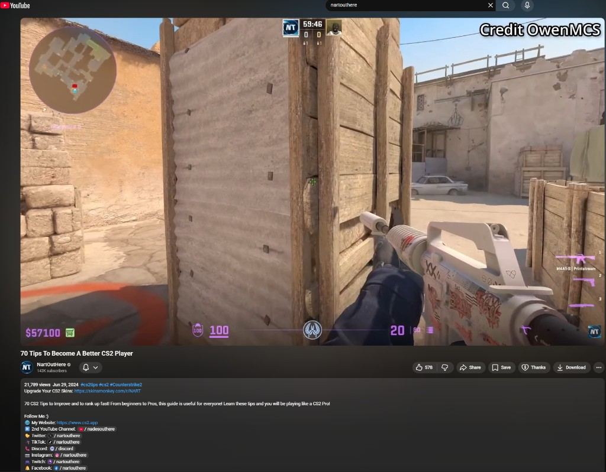

Documented June 28, 2024 · Counter-Strike 2
I recorded this tiny geometry gap on Dust II, the kind of spot you only notice when you’re lining up angles, and posted it on YouTube and Reddit (embedded above), and a few other places. At the time I meant to forward it through the same channel Valve uses for Counter-Strike bug reports; I’m not 100% certain that email ever went out, but the intent was there.
A day later (June 29, 2024), CS creator NartOutHere featured the clip in 70 Tips To Become A Better CS2 Player at 6:32 (with on-screen credit) in a tips compilation.

Open the video on YouTube or use the screenshot below, the still shows the “Credit OwenMCS” callout on the gap.
Watch nartouthere video hereA few days after that, Valve shipped the July 2, 2024 update , whose map notes included “Fixed hole in brick stack on bombsite B” on Dust II, that closed this gap.
I’ve sent Valve quite a few reports over the years without seeing a clear match in patch notes. This was the first time I could point at an update and feel pretty confident that this little map fix was connected to the work I put out publicly, including that first video, so it’s a personal milestone even if the change was small on paper.